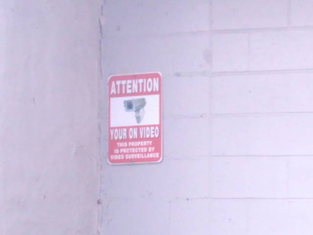
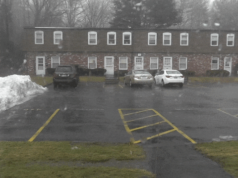
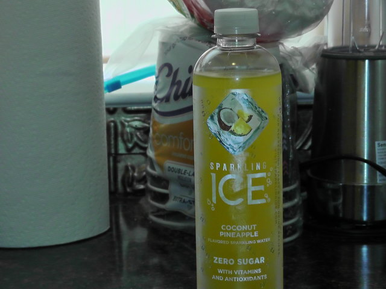

Your On Video
Written 18 February, 2022
Hello, everyone, and welcome back to Cerracrossing!
So today we went out to address some issues with our car, and at the shop I noticed this surveillance sign with a misspelling. xD
(Excuse the even-worse-than-normal quality, I only had my phone on me at the time ^^;)

Today's been warmer than usual, but earlier today it started pouring out of nowhere; this was probably in the top 5 for the heaviest rain I've ever experienced personally. It was fuckin insane xD
Luckily, I managed to capture it on camera :D (Note that it was literally like twice as hard as this at its peak lmao)

Does anyone here drink Sparkling Ice drinks? I'm embarrassed to admit I've been a bit addicted to them lately ^^;
But hey, at least they're better than soda... probably!

I've been using Uber Eats a lot, as my life has succumbed to a whole new level of convenience and complacency!! I've been spending WAY too much though so I really gotta cut back ^^;
I tend to find satisfaction in making tasks way more complicated than they need to be, though; in essence that's basically the entire appeal of updating this website, come to think of it - writing every page by hand in HTML. I dunno, maybe it's an autism thing XD
I recently discovered that my camera's screen can actually flip backwards, which makes taking selfies a lot easier xD
I actually took this photo of myself last night that I really like!
I've recently started a newsletter on TheMysteriousMrEnter's forum site, enterverseforums.com! It's been fun to keep up with and the community seems engaged, so I'm happy with how it's turned out so far!
This blog's quickly turning into a stream-of-consciousness kinda thing, which is actually what my blog on my old website was, too; Cerracrossing.com was originally a Weebly-hosted site that's sadly been lost to time ^^;
Anyway, that's about it for today. Once again, you can contact me or send feedback at any time at my e-mail, cerra.matthews@gmail.com! You can also send questions which I'll try to answer in these blogs, so long as they aren't too personal!
Cerra Matthews, signing off! B'bye!